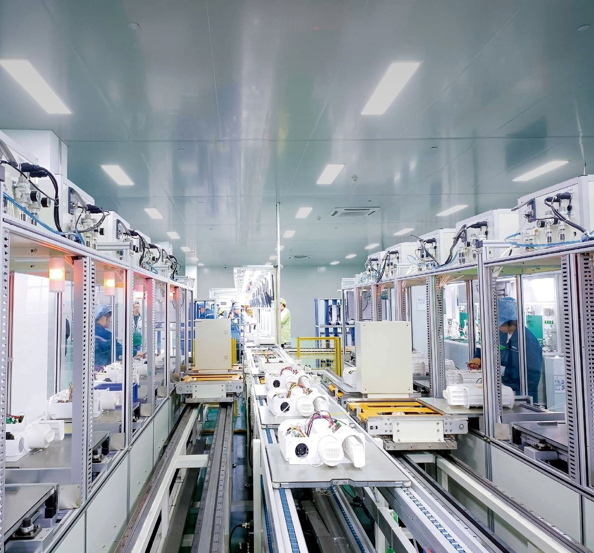

คู่มือการซื้อ
ไส้กรองเครื่องกรองน้ำใช้ได้นานแค่ไหนจริง ๆ?
เรียนรู้วิธีประเมินอายุไส้กรองจากปริมาตรน้ำที่กรองได้เป็นลิตรและคุณภาพน้ำในพื้นที่
หน้าแรก/ บทความความรู้
บทความความรู้
คู่มือสั้นสำหรับเจ้าของแบรนด์ที่เลือกรุ่น — หนึ่งคำถามต่อหนึ่งคู่มือ.
คู่มือการซื้อ
เรียนรู้วิธีประเมินอายุไส้กรองจากปริมาตรน้ำที่กรองได้เป็นลิตรและคุณภาพน้ำในพื้นที่

คู่มือการซื้อ
RO บนเคาน์เตอร์ไม่ต้องติดตั้ง เหมาะสำหรับผู้เช่าและพื้นที่เล็ก ส่วน RO ใต้ซิงก์ให้อัตราการไหลสูงกว่าสำหรับครอบครัว เปรียบเทียบการติดตั้ง อัตราการไหล และกรณีการใช้งาน.
คู่มือการซื้อ
CE-LVD, CE-EMC, RoHS และ REACH สำหรับยุโรป UKCA สำหรับสหราชอาณาจักร — ยืนยันตามรุ่นและตลาดก่อนที่ท่านจะสั่งซื้อ จะไม่มีการรับประกันใบรับรองใด ๆ จนกว่าจะยืนยัน.
คู่มือการซื้อ
MOQ คือ 200 ชิ้น ต่อรุ่น สำหรับเครื่องกรองน้ำแบบ private-label สั่งตัวอย่างก่อน ค่าตัวอย่างจะคืนให้เมื่อสั่งซื้อจำนวนมากครั้งแรก จัดส่งภายใน 40 วัน หลังการอนุมัติตัวอย่าง.
คู่มือการซื้อ
จับคู่กำลังการผลิต RO กับน้ำดิบของท่านก่อนเลือกรุ่น — เปรียบเทียบกำลังการผลิตของรุ่นตั้งโต๊ะ รุ่นใต้ซิงก์ และรุ่นตู้จ่ายน้ำ.
คู่มือการซื้อ
วัดขนาดตู้ก่อนเลือกรุ่นใต้ซิงก์ — ความกว้าง ความลึก ความสูง และพื้นที่สำหรับงานบริการ.

คู่มือการซื้อ
แรงดันไฟฟ้าและความถี่สามารถปรับตั้งได้ตามประเทศเป้าหมาย — ยืนยันตามรุ่นและคำสั่งซื้อแต่ละครั้ง.
จะมีคู่มือเพิ่มเติมที่นี่.